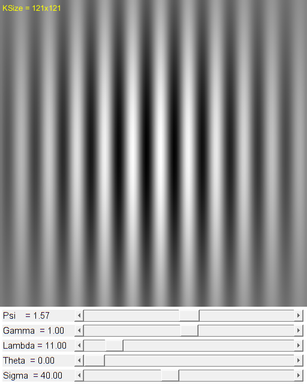

Gabor Filter demo
A GUI to interact with the 5 different Gabor filter parameters, while visualizing the resulting filter.
function varargout = gabor_filter_gui(ksize) % create the UI if nargin < 1, ksize = [121 121]; end h = buildGUI(ksize); if nargout > 0, varargout{1} = h; end end function onChange(~,~,h) %ONCHANGE Event handler for UI controls % retrieve current values from UI controls sigma = get(h.slid(5), 'Value') / 10; theta = get(h.slid(4), 'Value') * pi/180; lambda = get(h.slid(3), 'Value'); gamma = get(h.slid(2), 'Value') / 100; psi = get(h.slid(1), 'Value') * pi/180; % create Gabor filter kernel = cv.getGaborKernel('KSize',[h.ksize(2) h.ksize(1)], ... 'Sigma',sigma, 'Theta',theta, 'Lambda',lambda, ... 'Gamma',gamma, 'Psi',psi); % normalize filter to [0,1] range and resize it kernel = cv.normalize(kernel, 'NormType','MinMax'); kernel = cv.resize(kernel, [h.sz(2) h.sz(1)]); % show result set(h.img, 'CData',kernel) set(h.txt(5), 'String',sprintf('Sigma = %.2f',sigma)) set(h.txt(4), 'String',sprintf('Theta = %.2f',theta)) set(h.txt(3), 'String',sprintf('Lambda = %.2f',lambda)) set(h.txt(2), 'String',sprintf('Gamma = %.2f',gamma)) set(h.txt(1), 'String',sprintf('Psi = %.2f',psi)) drawnow end function onType(~,e,h) %ONTYPE Event handler for key press on figure % handle keys switch e.Key case {'q', 'escape'} close(h.fig) return case 'h' onHelp([],[]); case 'r' onReset([],[],h); end end function onReset(~,~,h) set(h.slid(5), 'Value',400); % sigma set(h.slid(4), 'Value',0); % theta set(h.slid(3), 'Value',11); % lambda set(h.slid(2), 'Value',100); % gamma set(h.slid(1), 'Value',90); % psi onChange([],[],h); end function onHelp(~,~) %ONHELP Display usage help dialog helpdlg({ 'This GUI allows to interact with the 5 different Gabor filter' 'parameters, while visualizing the resulting filter.' '' 'Hot keys:' 'ESC, q - quit the program' 'r - reset parameters to original values' 'h - this help dialog' }); end function h = buildGUI(ksize) %BUILDGUI Creates the UI % parameters sigma = 400; sigma_max = 1000; theta = 0; theta_max = 180; lambda = 11; lambda_max = 100; gamma = 100; gamma_max = 200; psi = 90; psi_max = 180; sz = [512 512]; % build the user interface (no resizing to keep it simple) h = struct(); h.ksize = ksize; % size of the filter h.sz = sz; % size of the image to show h.fig = figure('Name','Gabor Filter Demo', ... 'NumberTitle','off', 'Menubar','none', 'Resize','off', ... 'Position',[200 200 sz(2) sz(1)+129]); if ~mexopencv.isOctave() %HACK: not implemented in Octave movegui(h.fig, 'center'); end h.ax = axes('Parent',h.fig, 'Units','pixels', 'Position',[1 130 sz(2) sz(1)]); if ~mexopencv.isOctave() h.img = imshow(zeros(sz), 'Parent',h.ax); else %HACK: https://savannah.gnu.org/bugs/index.php?45473 axes(h.ax); h.img = imshow(zeros(sz)); end text(5, 5, sprintf('KSize = %dx%d', ksize(2), ksize(1)), ... 'Color','y', 'VerticalAlignment','top'); props = {'Parent',h.fig, 'Style','text', 'String','', ... 'FontSize',11, 'HorizontalAlignment','left'}; h.txt(5) = uicontrol(props{:}, 'Position',[5 5 120 20]); h.txt(4) = uicontrol(props{:}, 'Position',[5 30 120 20]); h.txt(3) = uicontrol(props{:}, 'Position',[5 55 120 20]); h.txt(2) = uicontrol(props{:}, 'Position',[5 80 120 20]); h.txt(1) = uicontrol(props{:}, 'Position',[5 105 120 20]); props = {'Parent',h.fig, 'Style','slider', 'Min',0}; h.slid(5) = uicontrol(props{:}, 'Position',[125 5 sz(2)-125-5 20], ... 'Value',sigma, 'Max',sigma_max, 'SliderStep',[10 100]./(sigma_max-0)); h.slid(4) = uicontrol(props{:}, 'Position',[125 30 sz(2)-125-5 20], ... 'Value',theta, 'Max',theta_max, 'SliderStep',[2 20]./(theta_max-0)); h.slid(3) = uicontrol(props{:}, 'Position',[125 55 sz(2)-125-5 20], ... 'Value',lambda, 'Max',lambda_max, 'SliderStep',[1 10]./(lambda_max-0)); h.slid(2) = uicontrol(props{:}, 'Position',[125 80 sz(2)-125-5 20], ... 'Value',gamma, 'Max',gamma_max, 'SliderStep',[2 20]./(gamma_max-0)); h.slid(1) = uicontrol(props{:}, 'Position',[125 105 sz(2)-125-5 20], ... 'Value',psi, 'Max',psi_max, 'SliderStep',[2 20]./(psi_max-0)); % hook event handlers, and trigger default start opts = {'Interruptible','off', 'BusyAction','cancel'}; set(h.slid, 'Callback',{@onChange,h}, opts{:}); set(h.fig, 'WindowKeyPressFcn',{@onType,h}, opts{:}); onChange([],[],h); end